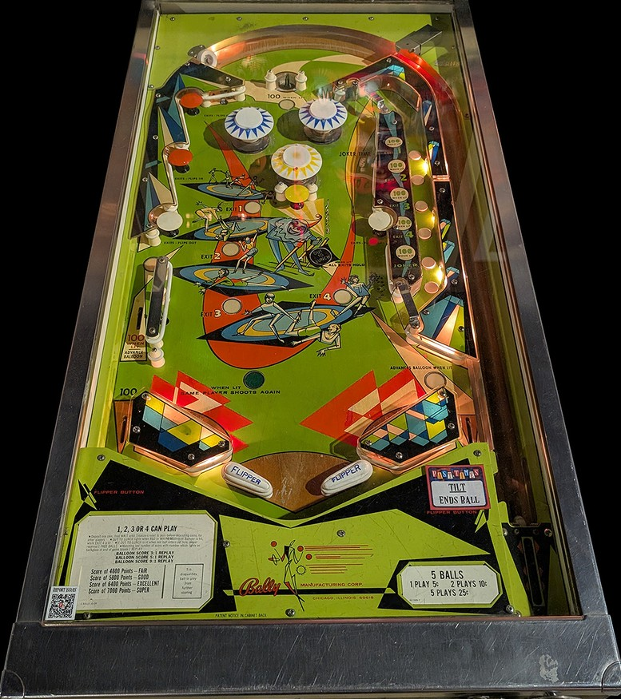

Not to be confused with the much more common Joker Poker (Gottlieb, 1978) or Jokerz! (Bally Williams, 1988).
Hit orange mushroom bumpers to advance the 1-2-3-4 exit sequence. White mushroom bumpers also advance the sequence, but they open the flippers, whereas orange mushroom bumpers zip the flippers together. Advancing the exit sequence past 4 lights Out to Lunch. The yellow mushroom bumper removes one step in the exit sequence unless Out to Lunch is lit. With the exit sequence built up, shoot the Joker Time lane on the right for big points. If the exit sequence is at 4, you can collect 410 points repeatedly; if Out to Lunch is lit, you'll collect the 500 points from Joker Time once and the sequence will reset.
The below picture of Joker's playfield was taken from the Open Pinball Database.

At the start of each ball, the top saucer scores 30 points and the blue pop bumpers score 1 point. Hitting the wall switch to the left of the top saucer on the plunge lights the top saucer for 100 points and the blue bumpers for 10 points for the rest of the ball. The yellow pop bumper always seems to score 1 point.
All mushroom bumpers score 10 points. Hitting an orange or white mushroom bumper will advance the Exit sequence shown on the playfield. Orange mushroom bumpers also zip the flippers together, temporarily and completely blocking off the center drain, while white mushroom bumper reopen the flippers if they are zipped. The Exit sequence counts 1, then 2, then 3, then 4, then Out to Lunch. If Out to Lunch is not lit, hitting the yellow mushroom bumper in the middle of the playfield will move the Exit sequence backwards one step. Reaching Out to Lunch awards an extra ball.
The value of the Joker Time lane, accessed via the entrance in the upper right, depends on how far the Exit sequence is advanced.
If the Joker Time lane is collected at Out to Lunch, the entire Exit sequence resets and one point is added to the Balloon Score, explained below.
One point of Balloon Score can be earned in three ways:
Each player has their own Balloon Score, indicated by a yellow score reel located next to their pinball score (which is shown on white score reels). Additional awards can be given for reaching certain Balloon Scores, such as one replay or one extra ball for reaching a Balloon Score of 3, 5, or 9.
Joker has no in lanes. 2-inch mini flippers back up directly to the slingshots. The flippers can be zipped together by hitting an orange mushroom bumper, and unzipped by hitting a white mushroom bumper; while the flippers are zipped together, they physically move closer together, blocking off the center drain.
On the left, the out lane scores 100 points, but there is also a drop lane about halfway up the table that drops the ball directly into the left out lane. This drop lane also scores 100 points and is lit for one Balloon Score if the Exit sequence has not been advanced at all and the flippers are not zipped together. The right out lane scores 100 points and awards one Balloon Score if Out to Lunch is lit and the flippers are not zipped together.
There is no end of ball bonus. Tilt ends the ball in play only.
The footage referenced when writing this guide was taken by Steel Valley Pinball at Past Times Arcade in Girard, OH.